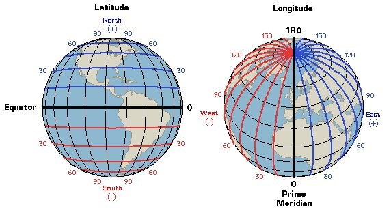

STEAM week 03.2019
I'm Ben's dad (Y2G), my name is Tom
This is dedicated to my friend Jacqui Kenny,
Usually with a map...
and a bit of planning.
OK, but how does it actually work?
it is code that runs in our browsers
written in a programming language called Javascript
A web browser is a software used to retrieve and present information from the World Wide Web
a programming language is a "formal" language that can be used to execute instructions to generate an output
Javascript is a programming language that can be interpreted by most web browsers
var map;
function initMap() {
map = new google.maps.Map(document.getElementById('map'), {
center: {lat: 51.573522, lng: -0.124304},
zoom: 8
});
}
center: {lat: 51.573522, lng: -0.124304},
Enables every location on Earth to be specified by a set of numbers. A common choice of coordinates is latitude, longitude and elevation. - Wiki
